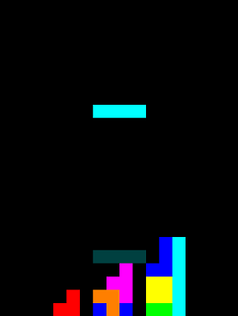
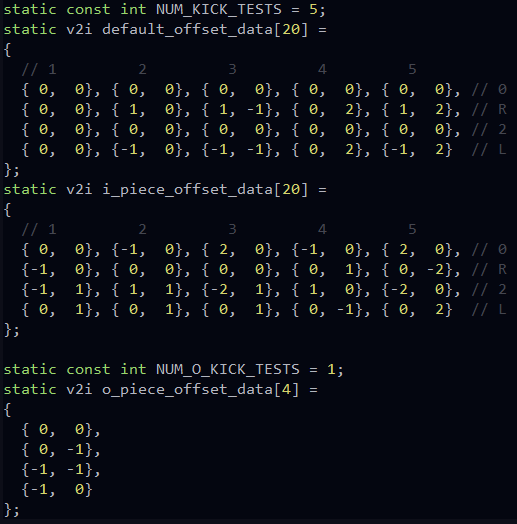

As practice for programming, I decided to create a simple Tetris game. My goal was to code the game as simply and as straightforward as possible. From there, I would be able to adapt the project and practice programming in other areas such as networking.
For the game, I wanted to make it as simple as possible and as few libraries as I could. So, I began by setting up a framework to render a grid on a window. After only a few hours, I was able to render Tetris pieces, stack them, and clear filled rows.
A unexpected few issues popped up along the way:
It took a bit to figure out how render the grid evenly in a divided screen. The three columns of the game (left holding piece bar, middle game bar, and right future pieces bar) should each be grids and render consistently. I made it easy to render pieces into any grid and it will look the same.
I had to do research on the exact mechanics of Tetris in order to get pieces and clearing to behave correctly. For example: Once filled rows are detected, you need to clear those filled rows top-down to deal with the case of any 1-4 filled rows.
Once the Tetris game was finally playable, it was time do deal with rotating pieces properly. Up until this point, I would not allow you to rotate a piece if it would end in an invalid position. In real Tetris games, the piece will try to resolve to a valid position. This allows for interesting plays such as T-spins. After doing research on how this is normally done, I discovered that there's a standard ruleset for resolving the collisions (lucky me!). Implementation for the collision resolution goes as follows:
Here's what the a kick lookup table looks like
Not only is this easy to understand, it's very efficient! At most, each collision check is 1 lookup and 5 kick tests. Now, my game plays as every other Tetris game and is tournament ready!
As a happy coincidence, I was taking my second networking class at the same time I was working on this project. This, combined with my interest in LEDs, inspired me to try and display the game on an LED grid.
My first task was to drive an LED grid using my Raspberry Pi. This was made easy enough using an existing codebase to drive the LEDs themselves. All I had to do was fill an integer array and send it to the driver. Since the Tetris game was architected simply and only used one library, it was trivial to port it to a Raspberry Pi. In no time, I adapted the renderer to just fill in integers on the grid and display that each frame. Here's the first-pass result:
Ported my Tetris game to a raspberry pi and hooked it up to my LED grid. pic.twitter.com/5jcOHQZ0Os
— Michael Fritz (@Wubbleduff) December 9, 2019
Here's where my networking class comes in: Once I could render whatever integer array I wanted, I just pulled integers from a receiving socket and displayed those. Then, my desktop could render the Tetris game to the window and a sending socket. After a bit of tweaking, it seemed to work as expected! The only issue was that it seemed to be very laggy. I thought this was just the nature of it being networked. But, after looking into it further, I was just overloading the networking system by sending packets too quickly. After restricting the stream to 30 packets per second, it was very responsive. Now, the Tetris game can be played on both my PC and the LED grid!
Streaming the game to the raspberry pi so I can play from any computer. Putting my network class to good use. :) pic.twitter.com/5QXp31SYq2
— Michael Fritz (@Wubbleduff) December 16, 2019
At this point, I was satisfied with the result and decided to move on to other projects. If I had more time, I would love to extend the game to multiple LED grids and mount these on my wall. And, since the Raspberry Pi just reads integers from a socket, you could stream all sorts of arcade-like games or anything else! It would be really cool to see other things like Snake, particle systems, or maybe even fluid simulations!